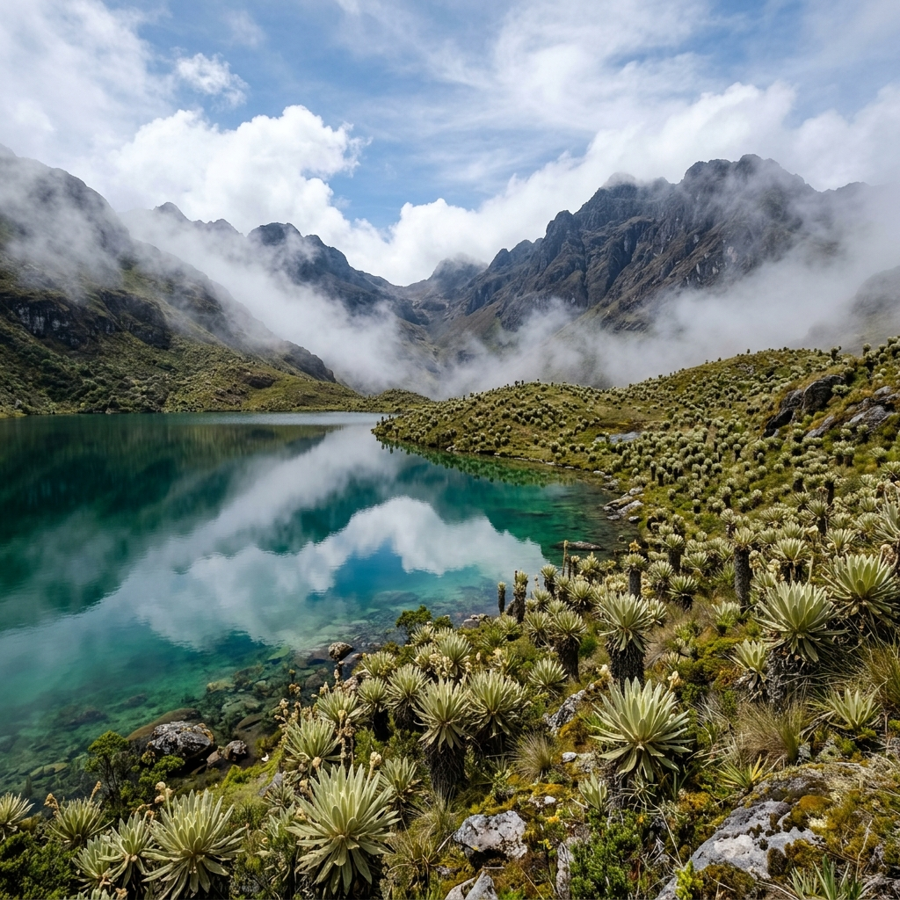
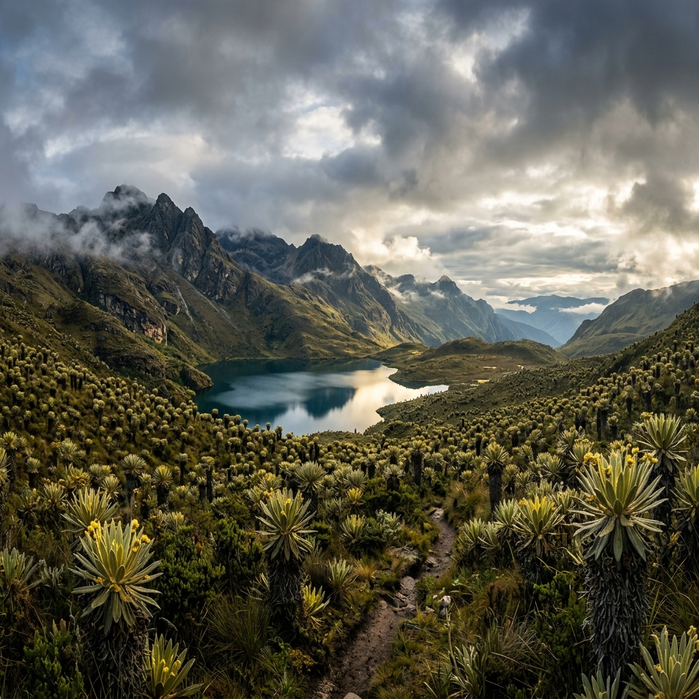
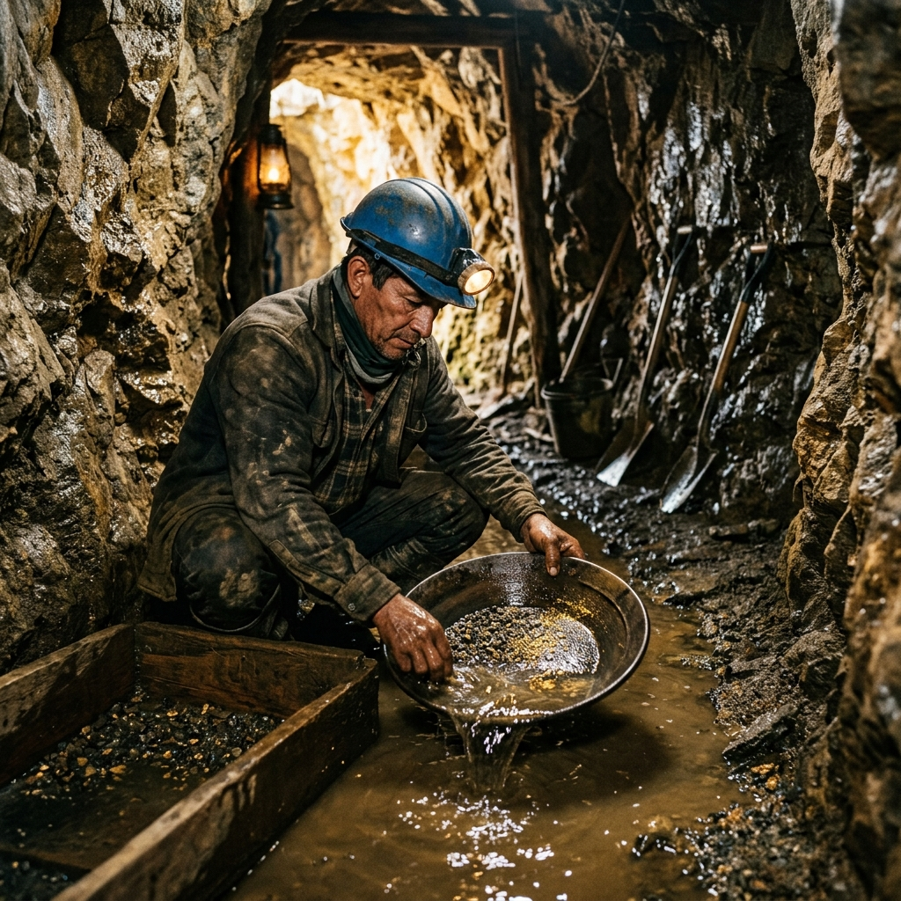
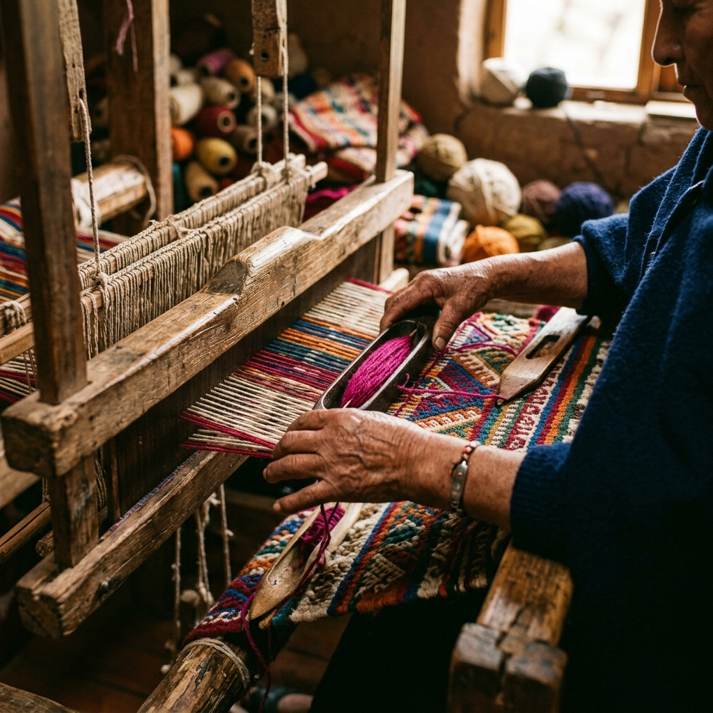
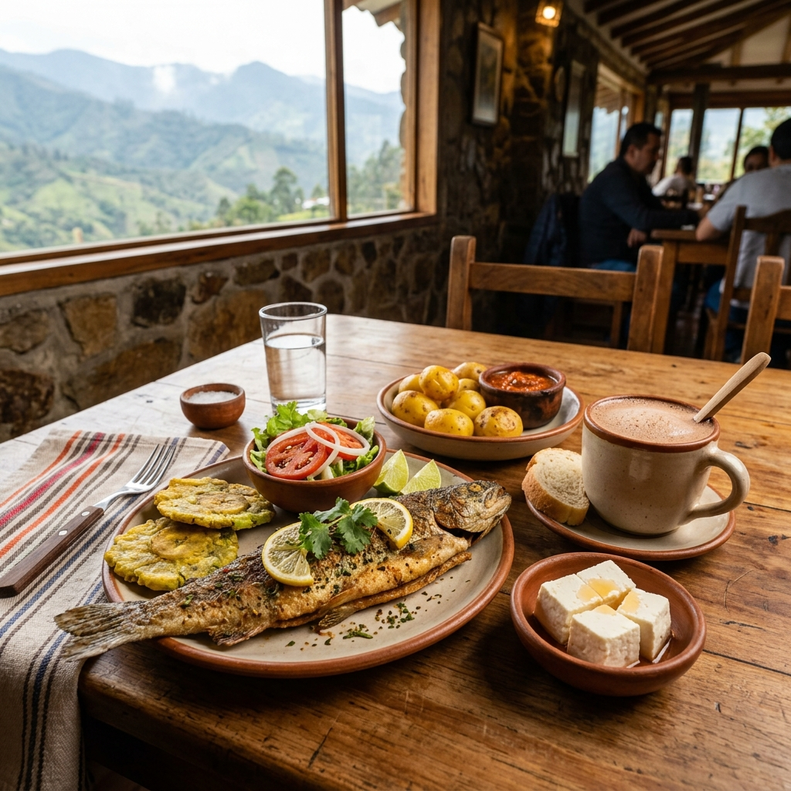
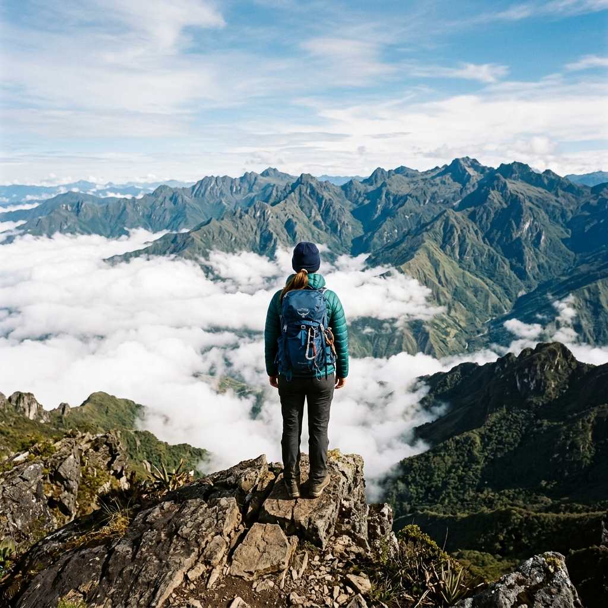

Pie de foto
El Techo de Colombia
Donde los frailejones tocan las nubes y el oro duerme bajo la montaña.
Descubrir VetasUbicado estratégicamente en la provincia de Soto Norte, en el departamento de Santander, Vetas desafía las nubes al erigirse como el municipio a mayor altitud en todo el territorio colombiano.
A más de 3.350 metros sobre el nivel del mar, este místico destino es el punto de encuentro perfecto entre la majestuosidad de los ecosistemas de alta montaña y una herencia cultural única. Sus paisajes fríos, pero llenos de calidez humana, te invitan a una travesía inolvidable.
Encuentra a Vetas en el mapa de Soto Norte, Santander. Un oasis de alta montaña rodeado de picos andinos.
La historia de Vetas está indisolublemente ligada a la minería. Fundada a mediados del siglo XVI, concretamente en 1555, la población ha mantenido viva la tradición extractiva como su principal dinamizador económico y cultural.
Este legado no es solo industrial; es una identidad colectiva. Los saberes técnicos y la pasión por la minería artesanal han sido transmitidos de generación en generación, convirtiéndose en el corazón palpitante de su vida social, sus mitos y sus costumbres.
Descubrimiento de ricos yacimientos auríferos por los españoles y establecimiento del asentamiento.
Vetas se posiciona como el principal productor de oro y plata de la región de Soto Norte.
Transmisión de saberes técnicos mineros ancestrales y desarrollo de la minería de subsistencia y artesanal con identidad cultural.

Vetas es una puerta de entrada privilegiada a uno de los ecosistemas más vitales y hermosos del continente: el Páramo de Santurbán.
Su geografía, dominada por los imponentes frailejones (verdaderos guardianes del agua) y majestuosos complejos lagunares, ofrece un espectáculo natural sobrecogedor. Visitar Vetas es sumergirse en una fábrica natural de agua pura que provee a millones de personas en la región.
El frío de la alta montaña ha forjado una de las facetas artesanales más destacadas del municipio: el tejido en lana de oveja. Los tejedores locales moldean con maestría ruanas, cobijas y sacos, manteniendo vivas las técnicas de hilado tradicional transmitidas de generación en generación.
La mesa vetana es un reflejo de su clima frío y su riqueza andina. Entre los sabores más destacados se encuentran los exquisitos derivados lácteos de alta montaña como el queso y la cuajada, acompañados por la trucha fresca cultivada en los criaderos de la región y un chocolate caliente humeante.
El clima de Vetas es extremadamente frío con vientos helados. Se recomienda llevar:
El Páramo de Santurbán es un ecosistema muy frágil. Recuerda siempre:
Un viaje de aventura hacia la cima de Santander:




